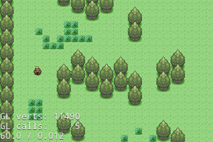

自我介绍
就读于深圳大学计算机学院。
因初三成功用简单的汇编修改GBA的口袋妖怪而对制作游戏产生兴趣。
熟悉c++，玩过python，AI，熟悉opengl的可编程管线，使用cocos2dx开发游戏。
因初三成功用简单的汇编修改GBA的口袋妖怪而对制作游戏产生兴趣。
熟悉c++，玩过python，AI，熟悉opengl的可编程管线，使用cocos2dx开发游戏。
项目经验
用opengl做三维水墨效果
用opengl 4.3实现了水墨扩散效果
（技术源于论文 MoXi: Real-Time Ink Dispersion in Absorbent Paper, Nelson S.-H. Chu 2005）
然后用二维的水墨扩散效果渲染三维物。

（技术源于论文 MoXi: Real-Time Ink Dispersion in Absorbent Paper, Nelson S.-H. Chu 2005）
然后用二维的水墨扩散效果渲染三维物。
两个手游


做第一个手游时，学习了一些寻路的做法，后来烂尾了。
第二个手游正在做，是一个结合音乐游戏和横板过关的游戏。
两个网站
各种小东西
联系方式
QQ：419446171
手机：15019494795
邮箱：doyoubihgx@gmail.com
手机：15019494795
邮箱：doyoubihgx@gmail.com